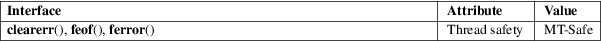

clearerr, feof, ferror − check and reset stream status
Standard C library (libc, −lc)
#include <stdio.h>
void
clearerr(FILE *stream);
int feof(FILE *stream);
int ferror(FILE *stream);
The function clearerr() clears the end-of-file and error indicators for the stream pointed to by stream.
The function feof() tests the end-of-file indicator for the stream pointed to by stream, returning nonzero if it is set. The end-of-file indicator can be cleared only by the function clearerr().
The function ferror() tests the error indicator for the stream pointed to by stream, returning nonzero if it is set. The error indicator can be reset only by the clearerr() function.
For nonlocking counterparts, see unlocked_stdio(3).
The feof() function returns nonzero if the end-of-file indicator is set for stream; otherwise, it returns zero.
The ferror() function returns nonzero if the error indicator is set for stream; otherwise, it returns zero.
These functions should not fail and do not set errno.
For an explanation of the terms used in this section, see attributes(7).

C11, POSIX.1-2008.
C89, POSIX.1-2001.
POSIX.1-2008 specifies that these functions shall not change the value of errno if stream is valid.
Normally, programs should read the return value of an input function, such as fgetc(3), before using functions of the feof(3) family. Only when the function returned the sentinel value EOF it makes sense to distinguish between the end of a file or an error with feof(3) or ferror(3).
open(2), fdopen(3), fileno(3), stdio(3), unlocked_stdio(3)